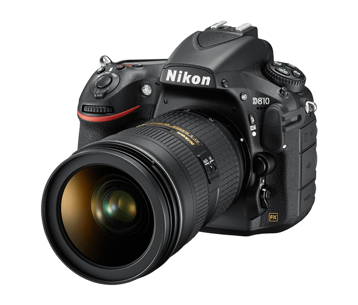
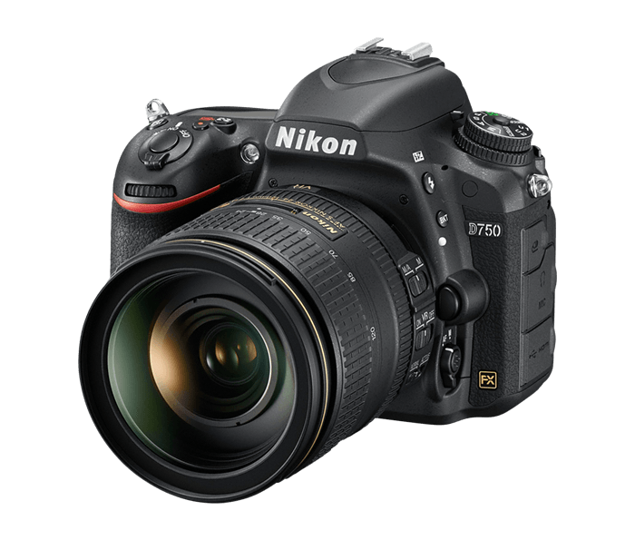
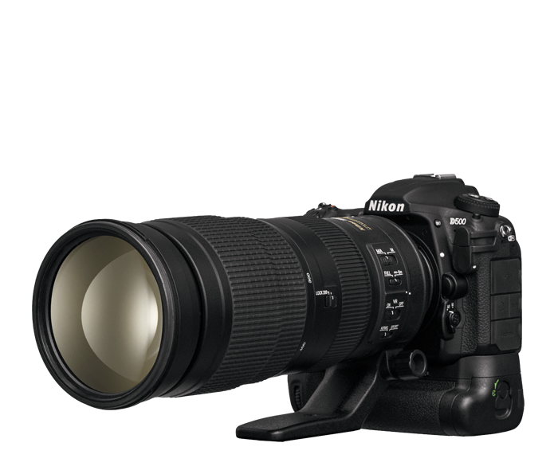
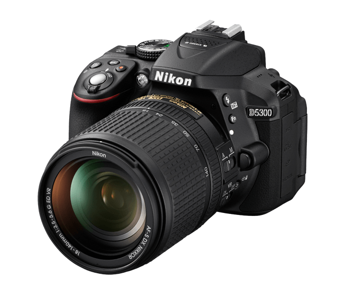

Class leading image quality, ISO range, image processing and metering equivalent to the award-winning D500
Large 3.2” 922K dot, tilting LCD screen with touch functionality
51-point AF system with 15 cross-type sensors and group-area AF paired with up to 8 fps continuous shooting capability
4K Ultra HD and 1080p Full HD video with stereo sound, power aperture control, auto ISO, 4K UHD Time-Lapse and more
Built-in Wi-Fi and Bluetooth for easy connectivity through the Nikon SnapBridge App.


Large, 24.2 MP DX-format CMOS sensor delivers high quality photos and videos in nearly any condition
Always connected to your smart device with SnapBridge for seamless transferring, sharing and remote camera control
3.2-inch Vari-angle touch LCD lets you swipe, pinch, zoom and even set focus with your fingertips, just like a smartphone
Advanced 39-point Auto Focus system quickly acquires focus where you want it
Wide ISO range from 100-25,600 lets you shoot from dawn to dusk with confidence
Full HD 1080 at 60p video capability with built-in stereo sound.

36.3MP HDSLR camera with no Optical Low Pass Filter
1080p videos recorded at 60/50/30/25/24p uncompressed to an external device, compressed to an internal CF/SD card or both simultaneously
Broadcast-caliber audio control right in the camera
Nikon's innovative EXPEED 4 image processing for flawless detail retention and beautiful noise-free images from ISO 64 to ISO 12,800.

Full frame 24.3 megapixel CMOS image sensor and EXPEED 4 image processor.
Full HD 60/50/30/25/24p video.
Tilting Vari-angle LCD display.
Built-in Wi-Fi connectivity and compatibility with the WT-5a + UT-1 Communication Unit.

20.9MP DX Format D500 DSLR, with its Multi-CAM 20K autofocus system with 153 AF points
AF-S NIKKOR 200-500mm f/5.6E ED VR lens which offers a 300-750mm field of view on the D500's DX image sensor
MB-D17 Multi Battery Power Pack which lets you shoot speeds up to 10 fps for up to 200 shots
Extra EN-EL15 Lithium-ion Battery so you won't miss the shots
2 SONY 32GB G Series XQD Memory Cards.

Nikon's first DSLR with built-in Wi-Fi and Near Field Communication (NFC)
24.2 MP DX-format CMOS sensor with no optical low-pass filter captures pure, sharp images
EXPEED 4 image processing with noise-free shooting from ISO 100 to ISO 25,600
1080p Full HD video with a built-in stereo mic, Auto ISO, Flat Picture Control, Zebra Stripe highlight monitoring and in-camera time-lapse.

24.2-megapixel DX-format CMOS image sensor
39-point high-density autofocus system with 9 cross-type sensors
Dazzling Full HD 1080p video recording with built-in stereo microphone
Built-in Wi-Fi for instant image sharing and camera control, and built-in GPS for geotagging your shots
Extra-large ultra-high resolution Vari-angle LCD that swivels 180°.